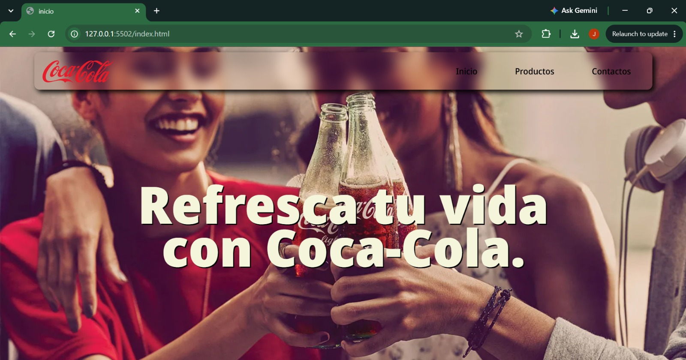

Hola, soy Andrés López,
pero puedes llamarme Jaandlo
Desarrollador de Software en formación
Soy estudiante de 5to semestre en Tecnología en desarrollo de Software en la Universidad Tecnológica de Pereira y aspirante a ser el mejor desarrollador Backend y Frontend aprendiendo de las nuevas tecnologías.
Sobre Mí
Soy un joven extrovertido que aspira a grandes metas agarrado de la mano de Jesús. Como estudiante de desarrollo de software, mi pasión es aprender nuevas tecnologías (como arquitecturas modernas, bases de datos avanzadas y diseño UI/UX) y aprender a que la IA sea mi aliada.
Estoy aquí para plasmar en un software cada idea creativa de cualquier tipo de usuario. Mi visión es ser un desarrollador master que no tenga impedimentos para resolver cualquier tipo de reto proporcionado y ofrecer una buena experiencia de usuario.
Habilidades Técnicas
HTML5
Estructuración semántica y accesible de interfaces web.
CSS3
Diseño responsivo, animaciones y maquetación con Flexbox y Grid.
Java
Desarrollo de lógica backend y estructuración robusta de aplicaciones.
C
Fundamentos de programación, manejo de memoria y algoritmos.
Bases de Datos
Diseño y gestión de modelos de datos eficientes e integrales.
POO
Programación Orientada a Objetos para código modular y escalable.
Git & GitHub
Control de versiones y trabajo colaborativo en repositorios.
Proyectos Destacados
Sistema de Gestión
Aplicación de consola para la gestión de inventarios y usuarios.
Java POO
Landing Page Tecnológica
Diseño estático moderno y responsivo para una startup ficticia.
HTML5 CSS3
COCA-COLA WEB
Página publicitaria con interfaz gráfica interactiva de una forma simple.
HTML5 CSS3Formación Académica
Tecnología en Desarrollo de Software
Universidad Tecnológica de Pereira (UTP)
Cursando actualmente el 5to semestre. Enfoque en arquitectura de software, bases de datos y desarrollo Fullstack.